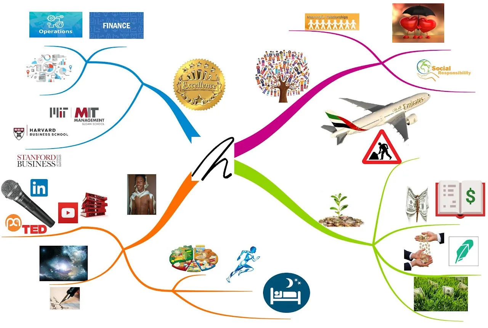

It is old news now, but last week I got admitted into the coterm program here at Stanford, which allows me to concurrently pursue both my Bachelor of Science and Master of Science Degrees in Management Science and Engineering. I subsequently accepted that admission and will therefore be at Stanford one more year. This means I have achieved a major component of the Vision Board I posted about 6 months ago. As such I must update the Vision Board with new goals that replace that one. A consequence of this is I must extend the current "Strategic Plan" up to June 2020, when I am due to graduate from Stanford. In anticipation of the direction of the next Strategic Plan, I am renaming Academic Excellence to Professional Excellence. All other pillars remain the same.
Personal Development
Since the last update on my goals, I have struggled to achieve the desired 7.5 hours of sleep every night. My current average is at around 6.5 hours a night. The result of this is I am less refreshed and therefore unable to give my 100% to everything I do. This is caused in part by overcommitting my time to various different activities that I care about. This is an area that I still have a lot of growing to do in, and I hope as I continue to think about the next Strategic Plan I will be able to come up with a framework to allow me to contribute to things that matter to me without stretching myself too thin. I am proud to share that I have eliminated the inefficiencies in my daytime schedule that were caused by social media by deleting my Facebook, Twitter, and Instagram accounts. While I now no longer have a way to find out where the coolest events are happening, the quality of my life has improved as I no longer waste time scrolling down feeds reading stuff that has negligible benefit to me. Since my departure from mainstream social media, I have taken to journaling more and regular correspondence with some few close friends as a way to share my points and opinions with humanity. In some ways, this website is also a substitute.
Professional Excellence
Yesterday while in my Corporate Financial Management class, our instructor was talking about the importance of executive teams of companies to understand Finance, Operations, and Analytics. It was as if he gave me the words to describe what I was trying to achieve with my MS&E education. I want to have a thorough understanding of Finance, Operations, and Analytics, in order to help businesses and institutions optimize their services. The remainder of my time at Stanford will be dedicated to ensuring that I have a solid understanding of the different models in each of the 3 areas and sharpening my technical skills to implement those models across a wide range of contexts. Specifically, out of recognition of the increasing role of automation and simulation in the application of models in these areas, I want to ensure I have an above average understanding of AI/ML tools. As I continue to think about life beyond Stanford, I will be coming up with a criteria of potential career paths and organizations to join based on my ever evolving ideas of meaningful work and sustained passion for improving different systems to (hopefully) maximize the benefit to society. I plan on finishing strong from Stanford, setting myself up for a successful career that will eventually lead me back to working in emerging economies. (I anticipate returning back to Stanford down the road for Business School, but maybe to diversify my networks I might just head to Harvard Business School or MIT Sloan).
Financial Sustainability
The worst investment decision I ever made was to delay exiting out of Diffusion Pharmaceuticals over 18 months ago when out greed, I had thought its stock price will keep rising. I ended up losing a significant amount of my (very small college-student) wealth. Following that, I refused to take that loss and held on to the stock even when it approached $0. This morning I woke up to the surprising news that for a short while it had spiked to levels that enabled me to exit out of that investment with a positive profit. I suppose these two weeks have been some of the luckiest two weeks of my life. In anticipation of a future life of stock picking, I plan to continue to learn the ins and outs of the stock market. So far my academic training is helping improve the quality of the bets I make, even though that is only part of the picture. I have been slacking off in as far as keeping track of my expenses goes. I need to return to increased vigilance and maintain a conservative attitude towards spending and lending. So far I have continued to have good cash flow management, although it can be improved.
Meaningful Communities
As I continue to root out the people I consider toxic in my life, I am learning of my own toxicity and shortcomings. In this final year of this chapter of my life, I hope to turn a lot of things around so that I walk into the next chapter a much better version of myself. I am starting by trying to understand the way past traumas shape my insecurities and how those, in turn, influence my present behaviors. While experience has taught me that unlearning toxic behaviors is difficult, in part because most are enabled by widely held social norms, having an awareness of these shortcomings improves the likelihood that I will unlearn and hopefully learn more constructive behaviors. In that regard, I also respect the people who will root me out of their lives. After all, we are all works in progress and sometimes we need to work on ourselves apart. Another motivator for this desire to work on understanding how my insecurities influence my behaviors, is that I anticipate romantic love will play a significant role in the chapter of my life after Stanford.
By writing these goals down and sharing them with the world, I hope it will keep me accountable to them. I also share these, and aspects of my life journey, because I believe life is an experience to be shared and witnessed.
← Return to Blog